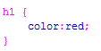
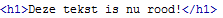
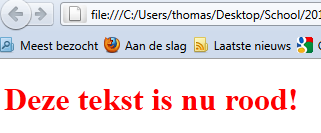
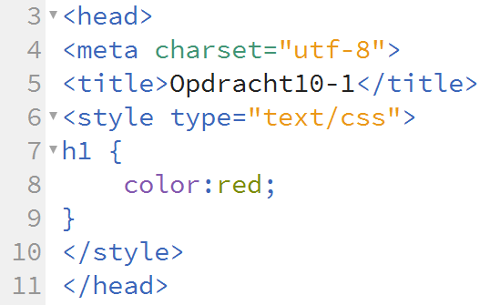
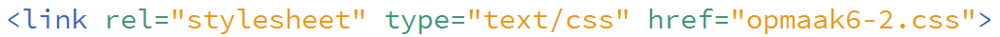

Inleiding
Zoals in de eerste les verteld gebeurd de opmaak van je webpagina met CSS. Dit staat voor Cascading Style Sheets. Letterlijk vertaald betekend cascading, stapsgewijze. Wat wijst op het kunnen overerven van opmaak. Style staat voor opmaak en sheets omdat het een extern bestand kan zijn.
Je hebt verschillende manieren om CSS aan je webpagina te koppelen. Hier komen we later nog uitgebreid op terug.
| CSS | Betekennis |
| inline | Je typt de CSS code in de HTML tag |
| intern | Je CSS code staat in de HEAD sectie van je pagina. |
| extern | Je CSS code staat in een apart css-bestand. In de HEAD sectie koppel je dit bestand aan je webpagina. |
De manier van CSS typen is anders dan in HTML. Waar we in HTML gewent zijn om te werken met Tags is dat nu niet meer zo. De opbouw van een CSS regel is als volgt:
Als eerste noem je de html tag welke je van opmaak wilt voorzien. Stel dat we op onze webpagina een <h1> hebben gebruikt. Deze is standaard zwart van kleur. Nu willen we dat dit een rode kleur krijgt. Het eerste wat we dan doen is h1 typen. Dus zonder de < en >. Vervolgens type je een { Accolade openen. Daarna type je de CSS-code om de kleur aan te passen. Dit is color:. Achter elke CSS-code volgt een dubbele punt! Vervolgens type je de waarde die bij de eigenschap hoort. We willen de <h1> kleur veranderen naar rood. We kunnen de kleurcode gebruiken of gewoon red; typen. Vergeet niet de punt-komma. Aan het einde van elke CSS regel typ je een punt-komma. Zodra je klaar bent met het opmaken van het h1 element dien je alleen nog een accolade sluiten te typen }.
 
De opbouw zoals hierboven geldt voor interne en externe stylesheets. Inline heeft een iets andere opbouw. Hier gaan we nu dus ook nog niet naar kijken.
| Let op: |
| In CSS code staat nooit een hoofdletter! |
Intern
Als je een interne stylesheet gebruikt dan doe je dit binnen de <head> sectie. Kijk goed naar onderstaande afbeelding.

Je ziet dat na de </title> tag een <style> tag wordt geopend. Hiermee geef je aan dat er CSS code getypt gaat worden. Je browser weet nu dat deze tekst anders gelezen moet worden. Een eigenschap van <style> is type. De waarde van type is altijd text/css. Omdat <style> HTML code is moet deze uiteraard ook weer afgesloten worden. Binnen de <style> tags komt dan alle CSS code.
| Opdracht 1: Intern CSS |
|
Open in je editor het bestand Opdracht3-1.html.
Sla het bestand op als Opdracht10-1.html. |
Extern
Zoals gezegd is de opbouw van CSS code in een extern stylesheet hetzelfde. De aanroep van het bestand is alleen anders. In dit geval maak je namelijk een apart bestand met al je CSS code er in. Dit bestand sla je ook op als een .css bestand.
Je kunt in Dreamweaver een leeg CSS bestand openen. Dit doe je op dezelfde manier als een HTML pagina alleen klik je dan op CSS. Je hebt hier geen last van doctype e.d. Als het goed is zijn je eerste 2 regels de volgende:
@charset "utf-8";
/* CSS Document */
Je muis cursor staat vervolgens op de vierde regel. Staan deze twee regels er niet, voeg ze dan toe door middel van knippen en plakken.
| Opdracht 2: Extern CSS |
|
Je hebt zojuist een leeg CSS bestand geopend. Zo niet, doe dit dan als nog.
Sla het bestand op als opmaak6-2.css. |
We hebben nu dezelfde CSS code als in de vorige opdracht. We moeten nu alleen dit bestand koppelen aan een HTML pagina. Hiervoor moet je één specifieke regel toevoegen in de <head> sectie. De regel staat hieronder afgebeeld.
Deze link voeg je toe binnen de <head> sectie. Het liefst na de </title>. De HTML tag is <link>. Link heeft drie belangrijke eigenschappen. De eerste is rel wat staat voor relation. Hier geef je altijd aan stylesheet, omdat we een CSS bestand koppelen. Bij type vul je altijd text/css in. Dit is hetzelfde als bij intern. href heeft te maken met de locatie van je CSS bestand. Omdat je deze opslaat in dezelfde map als je HTML bestand, kun je hier enkel de naam van het bestand invullen. Je ziet dat <link> niet wordt afgesloten, dit hoeft ook niet.
| Opdracht 3: Extern CSS |
|
Open in je editor het bestand Opdracht3-1.html.
Sla het bestand op als Opdracht10-3.html. |